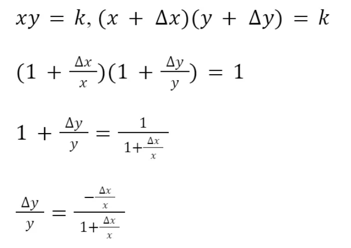
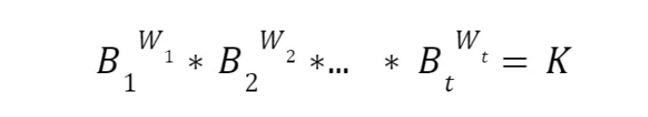
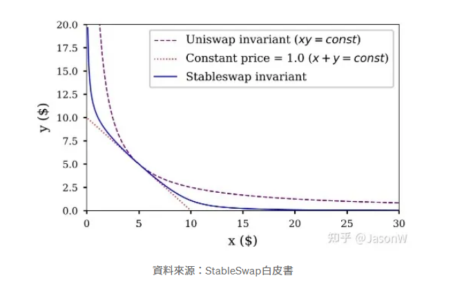

前言
上一篇簡介了 DeFi 生態系的發展，這篇打算細部介紹以太坊上的去中心化交易所協定 "Uniswap"，以及他的不同版本和試圖解決的問題，後面針對AMM機制解釋和 Uniswap 的延伸。
什麼是 AMM ( Auto Market Maker )？
AMM 是自動造市商 Auto Market Maker 的縮寫，AMM 讓傳統訂單簿交易轉變成交易池( Liquidity Pool: LP )，所有想交易的人不需要有對手訂單就可以完成交易，大幅增加交易效率，提供流動性的人還可以得到交易手續費分潤和治理代幣獎勵，解決了原本鏈上交易乏善可陳且高滑點的狀況，目前 AMM 在 DeFi 協議獲得廣泛應用，可以說是有了 AMM 才有 2021 的 DeFi 之夏。
AMM 的概念最早於 90 年代初由 Shearson Lehman Brothers 提出，以太坊的創辦人 Vitalik Buterin 在 2017 時提到自動造市商系統可用來解決鏈上交易困境，而 Uniswap 2018 上線時是第一個推出 AMM 的去中心化交易所，AMM 也被廣泛運用到借貸協議像是 Compound，存款人可以直接將資金存入 LP，借款人直接從 LP 借錢，借貸行為也不需要訂單簿交易。
Uniswap 與乘積恆定函數公式
Uniswap 是一個在以太坊區塊鏈上運行的交易所，它支援 ETH（以太幣）與 Token 之間、Token 與 Token 之間的快速兌換。這個交易所最大的特色是：它不需要 order book （掛單簿）系統，價格完全根據人們在此交易所進行的買賣自動調節。Uniswap 交易模式擺脫掛單簿，並在送出交易前就已得知報價。
以下是Uniswap 的特色：
- 易用性：簡單來說就是使用界面清楚簡單，在 Uniswap 交易所上買賣幣時，只要決定好賣出的幣種、買入什麼幣、以及數量是多少，按下 Swap 送出交易，在交易上鏈後就能立即取得你應得的幣。
- Gas 使用效率：根據白皮書所述，Uniswap 交易消耗的 gas 量是以太坊上的幾家主流交易所之中最低的，例如：Bancor, EtherDelta 等，也就代表在 Uniswap 交易要付的礦工費最少。主要是因為 Uniswap 不需要掛單簿機制，整體運算量較少。
- 抗審查性：抗審查性體現在 Uniswap 上架新幣的門檻：就是沒有門檻，任何使用者都能在 Uniswap 上架任何 Token。任何使用者只要發起一個 createExchange 的交易，就能讓一個 Token 上架到 Uniswap 的交易對中，上架後也沒有人能迫使它下架。
但是交易所如果要去中心化，也不使用掛單簿，就需要靠演算法自動算出交易標的的數量與價格，而 Uniswap 使用名為恆定乘積的演算法。
公式非常的簡單：x * y = k。令交易的兩虛擬貨幣為 X 和 Y，各自數量為 x 和 y，兩貨幣數量的乘積 x * y 恆等於 k，k 值是由第一筆注入的流動性所決定。
因此，用 ∆x 數量的 X 幣來購買 Y 幣所能得到的數量 ∆y、或是為了購買 ∆y 需要付出的 ∆x 數量，依照此公式進行計算：(x+∆x)(y+ ∆y)=k，而交易的價格就是兩幣量 ∆x 和 ∆y 的比。
由此公式可算價格彈性 (Elasticity)：
讓 ∆x/x=Ex ，則 Ey = -Ex /(1+Ex)，為了避免滑價，必須避免 Ex >>1, Ey>>1。
在 Uniswap 進行的每一筆交易都會被收取 0.003 / 0.3% 的手續費回饋給流動性提供者 liquidity provider ，因此要將手續費納入公式的考量，但是當交易池夠大時，交易手續費對 k 的影響極小。
Uniswap V1, V2, V3
雖說 Uniswap 的創新和想法顛覆當時業界的常態，但是 Uniswap V1 仍存在問題，在實際的運行過程中，受制於以太坊吞吐量和速度的問題，Uniswap也遭遇過價格操縱的情況。剛開始起階段，交易規模在整個加密世界還非常小，流動性深度不足，容易出現價格劇烈波動的情況。
Uniswap V2 解決 V1侷限性
由於Uniswap V1恆定乘積做市的機制局限，存在吞吐量、交易深度及攻擊者見縫插針等情況，市場行情容易出現劇烈波動等瞬時極端行情，Uniswap V2決定改變這一點。
V2 在繼續保持其去中心化的模式前提下，旨在提升價格操縱的成本和難度，主要做到以下兩方面的提升：
- 測定市場價格平衡：代幣兌換價格在後一個區塊之前測定，也就是代幣市場價格以前一個區塊最後一筆交易為準。以此為原則，除非攻擊者可以實現連續挖出兩個區塊，否則很難保證在後一個區塊中實現套利。攻擊者需要在前一個區塊操作最後一個交易，極大的保證了攻擊者價格操縱的難度。
- 時間加權平均價格（TWAP）：Uniswap V2 還提出了時間加權平均價格的概念，通過讀取ERC20代幣對從時間間隔開始到結束, 將這個累計價格差除以時間間隔的時長，從而創建出該時段的時間加權平均價格。通過時間加權原理來計算出該時間段的加權平均價格。
- 增加了ERC20/ERC20流動性池及閃兌換等功能：在V1中存在的ERC20-ETH池的基礎上，增加了ERC20/ERC20流動性池。
Uniswap V3
與V2相比，Uniswap V3注重資本效率的最大化，Uniswap V3全新 AMM 方案，除了最核心的聚合流動性之外，也帶來多級費率控制、範圍訂單、歷史預言機等功能。
1. 集中的流動性優化資本效率
眾所周知，V2版本中流動性提供者向V2池提供流動性時，流動性會沿著價格曲線均勻分佈。流動性就會分佈在0到無窮大之間的所有價格區間，如果大多數資產在一定的價格範圍內交易，這意味著，99.5%的剩餘資本幾乎從未被使用，這使得資本的效率相當低下。
以穩定幣為例，在V2裡DAI/USDC 池中，絕大多數交易量都集中在0.99美元到1.01美元之間交易，那麼流動池中只有0.5%左右資產被利用，剩餘99.5%資產處於閒置狀態。
V3為每個流動性提供者創建個性化的價格曲線，流動性提供者在提供流動性時可以自行選定價格範圍，用戶要針對某個價位的組合流動性進行交易，從而實現，用最少的流動資金賺取指定範圍內的交易費，實現資金利用率最大化。
2. 粒度控制聚合流動性積極的倉位管理
Uniswap V3「XY=K」曲線增加了「粒度控制」，用戶可以將資金效率集中在交易最頻繁的區間內，以獲得最大收益。
在單一區間0.1%的價格範圍內提供流動性，V3與V2相比，資本效率可以實現最大4000倍。除此之外，V3池 factory 將能夠支持0.02%的顆粒度範圍，V3相對於V2，最高可以實現20000倍的資本效率。
與此同時，當市場行情跌破或超出流動性提供者設定的「粒度控制」區間，流動性提供者必須提供單一幣種進行做市，此時LP提供的流動資產就會出現代幣抄底或賣出止盈，將不會賺取流動性交易費。為了保證收益的最大化，積極倉位管理及策略修正，是流動性提供者的不二之選。
以穩定幣為例，假設流動性提供者設置訂單「粒度控制」1.001~1.002區間範圍。一旦DAI/USDC交易價高於1.002，整個流動性提供者的流動資金就會被轉換成USDC。這時，流動性提供者必須撤回他們的流動資金，以避免一旦DAI/USDC回到1.002以下，交易自動轉換回DAI。
3. 靈活彈性交易費率、非同質化代幣追蹤
Uniswap V2中的標準0.3%交易費，而V3提供了3個獨立的費用等級：0.05%、0.3%和1%。
這使得流動性提供者可以根據他們願意承擔的風險來選擇資金池，這對於流動性提供者可選擇性更多及策略要求更高。
Uniswap V3不會再發行同質化的ERC-20 代幣來表示流動性提供者的頭寸。相反，它將提供非同質代幣（NFT）來表示流動性提供者的頭寸，提供的流動性由非同質化的ERC721代幣來追蹤。
4. Uniswap V2引入的時間加權平均價格（TWAP）預言機的重大改進
V3預言機可以通過一次鏈上調用，將數據可用期延長至9天或更長時間，同時通過TWAP整體優化，相比V2 降低了50% 左右的Gas 消耗，簡單的交易將比其V2的同等功能便宜30%左右。
目前，V3面臨的一個挑戰是，提供流動性可能會變得有點困難，特別是對於不太成熟的用戶，選擇到錯誤的價格區間可能會放大無常損失的影響。
乘積恆定函數公式發展
乘積恆定函數做市（CFMM）是最流行的 AMM 系列。當交易者希望將代幣 A 換成代幣 B 時，這種 AMM 會使用乘積恆定函數作爲其定價機制。在這種情況下，術語 “乘積恆定函數“ 指的是資產對的乘積必須在發生任意交易時都保持不變。這也是 Uniswap 所用的做市機制。以下就介紹AMM 的發展。
1. Uniswap (乘積固定)
Uniswap 利用乘積恆定函數為資產定價，
舉例說明，假設 ETH/DAI 池包含 100 ETH （x 的值）和 10,000 DAI （y 的值）。在這個例子中，Uniswap 將這兩個數量相乘，得到 k 的值爲 1,000,000。現在的目標是保持 k 值恆定，而不考慮對流動性池的交易量。做到這一點的唯一方法是，x 和 y 的數量反向變化。也就是說，當有人從池中取出 ETH，必須補充 DAI 進入池子，以求乘積固定。
利用乘積固定的公式好處是，它確保了當任何一種資產的價格接近無窮大時，總會有流動性。但是缺點就是幣種之間關係是漸進式的，當花費的代幣數量增加，收到的代幣數量會變小。
2. Balancer (一般化 Uniswap)
Balancer 的 AMM 一般化了 Uniswap 的乘積恆定功能，這個 AMM 的核心是價值函數，它強制規定資產池中的資產餘額的權重次冪的乘積應始終保持不變。
在這個公式中，t 代表池中的資產的種類數，Bt 是資產數量，Wt 是資產權重。它推廣了原本 Uniswap 只能兩個資產互換的情況。Balancer 的目標是在保持資產權重不變的情況下，只改變資產餘額，從而保持 k 不變。
3. Curve (總和固定)
Uniswap 和 Balancer 主要是針對波動和價格不穩定的代幣的交易。然而，當處理那些想要互相保持穩定的資產之間的交易時，低價格滑點是最重要的。之前迭代的各種 AMMs 固有曲率就有問題了，因爲交易規模越大，滑點就越大。解決價格滑點問題的一個方法是，使用常數和函數作爲 AMM 的內部交易機制。
雖然解決滑點問題，但它也使得原本好的性質不見了，即當任何一種資產從池子中流出時，池子總還會有流動性，而另一種資產的數量趨於無窮大。
爲了解決這些問題，Curve 創造了一種混合 AMM：在曲線的平衡點附近建立一條相對平坦的曲線，類似於恆定總和函數，以保持價格相對穩定，同時使兩端更加傾斜，類似於乘積恆定函數，因此在曲線的每個點都有流動性。Curve 的函數在中間表現爲恆定和函數，但隨著 x 和 y 的值的變大，則變爲乘積恆定函數。這種形狀使曲線中間段的價格保持穩定，同時又能在兩端提供流動性。
Curve Finance是需要找到兩種AMM類型之間的一個恆等式，既能創造比較好的流動性，有一定的價格自調整能力，又能在給定的交易範圍內降低滑點，達到的效果如下圖所示
上圖中的藍色曲線即代表穩定幣之間交易的AMM曲線，和Uniswap這種乘積恆等式的AMM設計來比，在預期的穩定價格附近有比較小的滑點，和恆定總和的AMM設計相比，在某一種代幣餘額產生較大偏離時，交易價格會發生比較大的變化，促使流動性提供者或者套利者通過市場行為恢復流動性池中代幣餘額的均衡。
結語
區塊鏈技術在過去幾年中迅速崛起，且以去中心化金融 (DeFi) 發展的最值得注目。流動性挖礦(liquidity mining)，亦稱為自動造市機制(AMM; automatic market making)是最被為注目的特色之一，幾乎成為 DeFi 項目中的基礎功能，Uniswap 提出恆定乘積公式成為指標性的 AMM 造市機制，目前仍是最大的去中心化交易協議。
Preface
In the previous article, I introduced the development of the DeFi ecosystem. This time, I will provide a detailed overview of the decentralized exchange protocol "Uniswap" on Ethereum, its different versions, and the problems it aims to solve. Additionally, I will explain the AMM mechanism and Uniswap's extensions.
What is AMM (Automated Market Maker)?
AMM stands for Automated Market Maker, a mechanism that replaces the traditional order book system with liquidity pools (LPs). This allows traders to complete transactions without needing a counterparty order, significantly improving trading efficiency. Liquidity providers can earn transaction fees and governance token rewards, addressing issues such as low liquidity and high slippage in on-chain transactions. AMMs have become widely adopted in DeFi protocols, playing a crucial role in the rise of DeFi in 2021.
The concept of AMMs was first proposed in the early 1990s by Shearson Lehman Brothers. In 2017, Ethereum co-founder Vitalik Buterin suggested that an automated market-making system could help resolve the inefficiencies of on-chain trading. When Uniswap launched in 2018, it became the first decentralized exchange (DEX) to implement an AMM model. The AMM mechanism has since been widely adopted in lending protocols like Compound, allowing depositors to provide funds directly to LPs while borrowers take loans from them—eliminating the need for order book-based transactions.
Uniswap and the Constant Product Formula
Uniswap is a decentralized exchange operating on the Ethereum blockchain, enabling fast swaps between ETH and tokens or between different tokens. Its key feature is that it does not rely on an order book system—prices are automatically adjusted based on market demand.
Here are some notable features of Uniswap:
- Ease of Use: The interface is user-friendly. To trade on Uniswap, users simply select the tokens they want to swap and input the amount before clicking "Swap." Once the transaction is confirmed on-chain, the tokens are received instantly.
- Gas Efficiency: According to its whitepaper, Uniswap consumes less gas than other major decentralized exchanges on Ethereum, such as Bancor and EtherDelta. This is because Uniswap eliminates the need for an order book, reducing computational overhead.
- Permissionless Listing: Uniswap allows anyone to list a token without restrictions. Users can create a new token trading pair by executing a `createExchange` transaction. Once listed, no one can force its removal.
Since Uniswap does not use an order book, it relies on an algorithm to determine asset prices and quantities automatically. This algorithm is known as the "constant product formula."
The formula is straightforward: x * y = k. Let x and y represent the quantities of two assets (X and Y) in a liquidity pool. Their product remains constant (k), determined by the initial liquidity added to the pool.
Thus, the amount of token Y received for swapping ∆x of token X—or vice versa—is calculated based on the formula: (x+∆x)(y+ ∆y) = k. The exchange rate is derived from the ratio of ∆x to ∆y.
The price elasticity (Elasticity) is given by:
Let ∆x/x = Ex, then Ey = -Ex /(1+Ex). To minimize slippage, it is necessary to avoid Ex >>1 and Ey >>1.
Every Uniswap transaction incurs a 0.3% fee, distributed to liquidity providers. However, when the liquidity pool is large, the impact of these fees on k is minimal.
Uniswap V1, V2, V3
Although Uniswap was a groundbreaking innovation, Uniswap V1 had limitations. It faced issues such as Ethereum's scalability constraints and susceptibility to price manipulation. In its early days, low liquidity led to high price volatility.
Uniswap V2: Addressing V1 Limitations
Uniswap V2 introduced key improvements to mitigate Uniswap V1's constraints:
- Market Price Determination: Token prices are determined at the end of the previous block, reducing opportunities for front-running attacks. An attacker would need to mine consecutive blocks to manipulate prices.
- Time-Weighted Average Price (TWAP): Uniswap V2 introduced TWAP by averaging price changes over a time interval, making manipulation more costly.
- Expanded Liquidity Pools and Flash Swaps: V2 added ERC20/ERC20 liquidity pools, eliminating the need for ETH as an intermediary.
Uniswap V3
Compared to V2, Uniswap V3 focuses on capital efficiency by introducing:
1. Concentrated Liquidity for Improved Capital Efficiency
In Uniswap V2, liquidity is evenly distributed across all possible prices, meaning that much of the capital remains unused. V3 allows liquidity providers to allocate capital within specific price ranges, significantly improving efficiency.
For stablecoins, most trades occur within a narrow price range (e.g., $0.99–$1.01 for DAI/USDC). With V2, only 0.5% of liquidity is actively utilized. V3 enables providers to concentrate their liquidity within this range, maximizing fee earnings.
2. Granular Control Over Liquidity Positions
Uniswap V3 introduces "granular liquidity control," allowing LPs to concentrate liquidity in the most active trading ranges.
Compared to V2, this can achieve up to 4000x capital efficiency within a 0.1% price range and up to 20000x efficiency with 0.02% granularity.
3. Flexible Fee Tiers & NFT Liquidity Positions
V3 offers multiple fee tiers: 0.05%, 0.3%, and 1%, allowing LPs to choose pools based on their risk preferences.
Instead of issuing fungible ERC-20 LP tokens, Uniswap V3 represents liquidity positions as non-fungible tokens (NFTs), providing more flexibility.
4. Improved TWAP Oracle
V3 reduces gas costs by ~50% compared to V2 while improving oracle efficiency, enabling price data retrieval over extended periods.
Development of the Constant Function Market Maker (CFMM)
CFMM is the most widely adopted AMM model. When traders swap Token A for Token B, the protocol maintains a constant product of asset reserves to determine the exchange rate.
1. Uniswap (Constant Product Function)
For example, if an ETH/DAI pool has 100 ETH and 10,000 DAI, Uniswap ensures that their product (1,000,000) remains constant. When ETH is withdrawn, an equivalent amount of DAI must be deposited to maintain balance.
2. Balancer (Generalized Uniswap)
Balancer extends Uniswap's model by allowing multiple assets with customizable weight distributions.
3. Curve (Constant Sum Function)
Curve optimizes AMMs for stablecoin trading by minimizing slippage near equilibrium prices while maintaining liquidity.
Conclusion
Blockchain technology has rapidly evolved, with DeFi emerging as one of its most significant innovations. AMMs, pioneered by Uniswap's constant product model, have become foundational to DeFi, making Uniswap the leading decentralized exchange protocol.
English translate is generated by AI for reference.